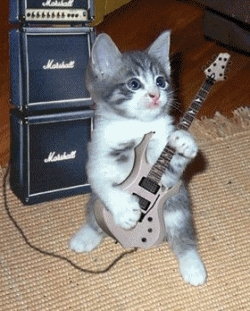
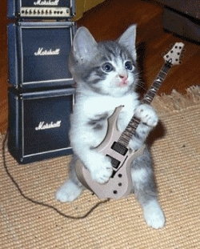
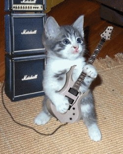

Made by
Seth Kranzler
THE TWELFTH DAY
The new mode of life I was about to begin, said Duclos, obliges me to draw your attention, Messieurs, to my personal appearance and character at the time; one is better able to figure the pleasures being described if one is first acquainted with the object that procures them
I had just attained my twenty-first year
"My hair was brown, but nevertheless my skin was of a most agreeable whiteness"
The abundance of hair covering my head fell in floating and perfectly authentic curls to just above my knees
I had the eyes you behold me now to have, and they have always been judged lovely
My figure was rather full although tall, supple, and gracious
With what regards my behind, that part of the anatomy in which libertines today take such a keen interest, it was by common consent superior to the most sublime specimens one is likely ever to see, and there were few women in Paris who had an ass as deliciously molded; it was full, round, very plump, and exceedingly soft, generous, I say, but without its ampleness detracting anything from its elegance, the least gesture immediately discovered that heavenly little rosebud you so cherish, Messieurs, and which, I do indeed like yourselves believe, is a woman's most magical attraction
Although I had been for a long season active in libertinage, my ass could not have been healthier or looked more untried; its splendid condition was in part owing to the good constitution Nature had granted me and in part to the extreme prudence I exercised on the battlefield, scrupulously avoiding encounters capable of damaging my most precious asset
I had very little love for men, I had never had but one attachment; I had a libertine maid, but it was extraordinarily libertine, and after having described my charms it is only fitting that I say a word or two about my vices
I love women, Messieurs, I don't deny it
Not however to the uncommon degree my good colleague, Madame Champville, loves them; she will probably tell you that she has ruined herself for them; I have simply always preferred them to men in my pleasures, and those they have procured me have always exerted a more powerful sway over my senses than masculine delights
"Apart from this fault, I have had another of adoring to steal: I have refined this mania to an unbelievable point"
Entirely convinced that all possession should be equally distributed in the world and that it is only strength and violence which are opposed to this equality, foremost law of Nature, I have striven to rectify the actual scheme and to do my utmost to re-establish the proper balance
And had it not been for this accursed compulsion I might perhaps still be with the benevolent mortal of whom I shall speak next
"You say you have done considerable stealing?" said Durcet
"An astonishing amount, Monsieur; had I not always spent what I filched, I would be wealthy today
"
"But was there not more to it than that?" the financier pursued
"Some aggravating detail, such as, for instance, forced entry, abuse of confidence, manifest deceit?"
"Everything under the sun," Duclos assured him
"I did not think it worth dwelling on these matters which would also have disturbed the smooth unfolding of my history, but since it is evident they might amuse you, in future I'll not forget to cite my thefts
"As well as that fault, I have always been reproached for another: I am said to have a hard heart, a very bad one indeed; but is that fault really mine? or is it not rather from Nature we have our vices as well as our perfections? and is there anything I can do to soften this heart she caused to be insensible? I don't believe I have ever in all my life wept over my troubles, and I can safely assure you I have never dropped a tear for the afflictions of others; I loved my sister, and I lost her without the least twinge of grief, you were witness to the stoic indifference with which I greeted news of her undoing; I would, by God, see the universe perish without a sniffle or a sigh
"
"That is how one must be," said the Duc, "compassion is a fool's virtue
Close examination reveals that it is never anything but compassion which costs us delights
But with that toughened heart of yours, you must have committed crimes, for, you know, insensibility leads straight to nothing else
"""
"My Lord," Duclos replied, "the regulations prescribed for our narrations prevent me from apprising you of a great many things; my companions will supply what you have ordained I omit
I do have one word to say, however: when later on they attempt to represent themselves to you as villains, you may be perfectly sure I have never been any better than they
"
""That, I should say, is doing justice to oneself," Blangis observed"
"Well, go on with your tales; we'll have to be content with what you tell us, for we have ourselves set bounds to your discourses; but remember that when we, you and I, have a little chat together, I'll insist upon hearing of your various peccadillos
"
"And I shall conceal none of them from you, Sire
May it be that after having heard me out you shall have no cause to repent of your indulgence toward one of the King's worst subjects
"
Wherewith she lifted up her voice and addressed the assembly again: Despite all these defects, and above all that of being thoroughly unappreciative of the value of the humiliating sentiment of gratitude, which I consider as naught but an injurious burden to humanity and one which completely degrades the pride and self-respect implanted in us by Nature, with all
these deficiencies, I say, my companions were nevertheless very fond of me, and of them all I was the most sought after by men
""
Such was my situation when a rich landowner named d'Aucourt came to have a party at Fournier's; as he was one of her steadfast clients, but one who preferred girls brought in from outside the house to those residing in it, he was held in the highest esteem, and Madame, who felt I had absolutely to make his acquaintance, gave me notice two days beforehand not to waste an ounce of the precious matter for which he had a greater passion than any of the other men I had met with until then; but from the details you will be able to judge of all this for yourselves
""
D'Aucourt arrived, and having eyed me up and down, he scolded Madame Fournier for having waited so long to supply him with this pretty creature
"I thanked him for his gallantry, and up we went together"
D'Aucourt was about fifty years of age, heavy-set, fat, but his face was pleasant to see, there was animation in his features, he was witty and, what pleased me most of all about him, he had a gentleness and honesty of character which enchanted me from the first moment
"You must have the world's loveliest ass," said he, drawing me to him and burrowing his hand beneath my skirts
His hand went directly to my behind
"I am a connoisseur, and girls of your figure and general look almost invariably possess striking asses
Why, look here, didn't I tell you so?" he continued, after briefly palpating the object, "how fresh and round it is!"
"And nimbly turning me around as with one hand he lifted my skirts to my waist and with the other fondled the article, he fell to work examining the altar to which he addressed his prayers"
"Jesus!" he cried, "by the Saviour, 'tis really one of the finest asses I have clapped eyes on in all my days and, believe me, I have studied many
… Spread… Great God, behold that strawberry!…
allow me to suck it… devour it… 'tis really a beautiful ass indeed, this one… eh, tell me, dearie, have they given you the instructions?"
"Yes, Monsieur
"""
"They told you I have them shit?"
"Yes, Monsieur
"
"But your health?" went on the capitalist, "there's nothing amiss?"
"Never fear, good sir
"
""It's simply, d'ye see, that I carry things rather far," he went on, "and if you have the least illness or symptom, then I run a great risk"
"
"Sir," said I, "you can do absolutely anything you please, I guarantee you I am as fit and sound and safe as a newborn babe; you may act in confidence
"
After this preamble, d'Aucourt had me bend around toward him and, all the while keeping my buttocks spread wide, and gluing his mouth to mine, he sucked my saliva for fifteen minutes or so; he withdrew his mouth in order to expectorate a little "fuck," and then returned to his amorous mouth pumping
"Spit into my mouth, spit," he repeated, "from time to time, fill it with saliva
"
And then I felt his tongue run over my gums, drive as far as possible into my mouth, and I had the impression it was endeavoring to draw everything out of me
"Excellent," said he, "I'm getting stiff
Let's go to work
"
Then he fell to contemplating my buttocks again, ordering me to encourage the rise of his prick
I pulled out a strange little engine three inches thick and only five long; it was as hard as a cobblestone and full of fire
""Remove your skirts," d'Aucourt told me, "while I take off my breeches; your buttocks and mine too have to be thoroughly at their ease for the ceremony we are about to execute"
"
Then, once I had obeyed him:

""Lift your blouse further up, that's it, close to your corset," he continued, "and see to it your behind is absolutely disencumbered"
… Lie on your stomach upon the bed
"
He fetched up a chair and seated himself by the bed, then returned to caressing my bum, the mere sight of which appeared to intoxicate him; he spread my buttocks for a moment and I felt his tongue sound deep into my entrails, this, said he, in order beyond any shadow of equivocation to verify whether indeed the hen were inclined to lay; I report his own expressions to you
All this while, I was not touching him, not at that stage, he was himself lightly stroking the dry little member I had just brought from its lair
"Are you ready, my child?" he asked
"For it is high time we undertake our task; your shit seems to me as it should be, I've established that, remember to shit gradually, a little at a time, and always wait until I have consumed one morsel before pushing out the next
My operation takes quite a while, so don't be in haste
A light slap on your ass will notify you that I'm ready for more, but see to it that I get no more than a bite
"
Having then adopted the most comfortable position, he glued his mouth to the object of his worship, and in less time than it takes to tell I delivered a gobbet of shit the size of a pigeon's egg
He sucked it, turned it a thousand times about in his mouth, chewed it, savored it, at the end of three or four minutes I distinctly saw him swallow it; I push again, the same ceremony is repeated, and as I had a prodigious charge to be rid of, ten times over he filled his mouth and emptied it, and even after all was done he seemed famished still
""That is all, Monsieur," I said when I had finished, "I'm pushing in vain now"
"
"It's all over, is it, my little dear? Why, then I believe I'll discharge, yes, discharge while paying my respects to this superb ass
"Oh, Great God, what pleasure you give me! I've never eaten more delicious shit, I'd swear to that before any jury"
Give it to me, bring it hither, hither, my angel, bring me your matchless ass to suck, let me devour it
"""
And thrusting what seemed to be twelve inches of tongue through my anus and while doing so manualizing himself, the libertine spatters his fuck over my legs, not without uttering a host of obscene words and oaths necessary, apparently, to the crowning of his ecstasy
When at last it was all over, he sat down, invited me to sit beside him and, regarding me with great interest, asked whether I were not tired of the life of the brothel and if I should not be pleased to come across someone who would extricate me from it; seeing he had taken a fancy to me, I began to demur, and to spare you a long story which could not possibly be of any interest to you, after an hour of debating I let myself be won over, and it was decided that on the following day I would take up quarters in his home in return for twenty louis per month and board; that as he was a widower, I could conveniently occupy a large apartment in his town house; that I would have a maid to wait upon me and the society of three of his friends and their mistresses with whom he got together for libertine suppers four times each week, sometimes at his own establishment, sometimes at one of theirs; that my one obligation, and occupation, would be to eat a great deal, and always the fare he had served to me, because, doing what he did, it were essential I be fed on a diet which accorded with his taste—to eat a great deal, I say, to sleep long
"and soundly in order that my digestion be good and thorough, to purge myself regularly once a month, and to shit in his mouth twice every day; that this rate of shit consumption, or rather of shit production, ought not to frighten me because, by stuffing me with food, as he planned to do, I would perhaps hear the call not twice but three times a day"
The capitalist presented me with a very pretty diamond in token of his eagerness to conclude the bargain; then he embraced me, told me to settle my affairs with Fournier and to be ready the following morning, at which time he would come to fetch me himself
My farewells were quickly said; my heart regretted nothing, for it knew nothing of the art of forming attachments, but my pleasures regretted the loss of Eugénie, with whom for six months I had enjoyed an exceedingly intimate liaison; I left
D'Aucourt received me with wonderful graciousness and himself took me to the very pretty suite which was to be my new habitation; I was soon fully installed
I was expected, indeed condemned, to eat four meals whence were excluded a great number of things I should have adored having: I had to go without fish, oysters, salted meat, eggs, and every kind of dairy product; but on the other hand I was so well recompensed that in truth I had no real grounds for complaint
"The basis of an ordinary repast consisted of an immense quantity of breast of chicken, of boned fowl prepared and presented in every imaginable fashion, little beef or other red meat, nothing that contained grease, very little bread or fruit"
"I had to eat these foods even for breakfast in the morning and, in the afternoon, at tea; at these hours, they were served me without bread, and d'Aucourt gradually induced me entirely to abstain from bread; ever since then I've not eaten it at all, and I've also given up heavy soups"
The result of this diet, as my lover had calculated, was two bowel movements per day, and the stools were very soft, very sweet, somewhat small but, so d'Aucourt maintained, of an exquisite taste which could not be obtained by ordinary nourishment; and d'Aucourt was a man whose opinion deserved to be accorded some weight, for he was a connoisseur
Our operations were performed when he awoke and when he retired for the night
Their details were more or less what I have already given you: he would always begin with a prolonged sucking of my mouth, which I had always to present him in its natural state, that is to say, unwashed: I was only allowed to rinse it out afterward
"He would not, furthermore, discharge every time he dined, our arrangements did not in any way bind him to fidelity"
D'Aucourt kept me as the pièce de résistance, I was the roast beef, as it were, but that did not prevent him from sallying forth every morning for a nibble of lunch somewhere else
"Two days after I had arrived, his comrades in debauch came for an evening at his home, and as each of the three boasted, in the taste we are presently analyzing, a superficially different although fundamentally identical passion, by your leave, Messieurs, every little example adding to our collection, I shall devote a few words to the fantasies in which they indulged themselves"
""
The guests arrived
"The first was an elderly parliamentarian, in his sixties, and named d'Erville;"
his mistress was a woman of forty, exceedingly handsome, and having no visible defect other than certain excess of flesh: her name was Madame du Cange
"The second was a retired military officer of between forty-five and fifty, he was called Desprès, his mistress was an attractive young person of twenty-six, blond, and having as lovely a body as you may hope to find: her name was Marianne"
The third was an abbot, sixty years old, Du Coudrais by name; his mistress was a lad of sixteen, pretty as a star, whom the good ecclesiastic passed off as his nephew
""
The table was laid in that part of the house near my chambers; the meal was festive, the fare delicate, and I remarked that the young lady and the youth were on a diet very similar to mine
Characters declared themselves while we dined; it was impossible to be more a libertine than d'Erville; his eyes, his speech, his gestures, everything about him proclaimed debauchery, libertinage was painted in his every line; there was more of the restrained, the deliberate in Desprès, but lust was none the less the soul of his existence; as for the abbot, he was the world's most arrant, boldest atheist: blasphemies flew from his lips with virtually every word he pronounced; with regard to the ladies, they emulated their lovers, tattled and chattered a blue streak but in a rather agreeable tone; the young boy struck me as being as great a fool as he was a pretty one, and du Cange, who seemed smitten by him, cast a series of tender glances toward him, every one of which he failed even to notice
All propriety had vanished by the time dessert arrived, and the conversation had become as filthy as the goings on: d'Erville congratulated d'Aucourt upon his latest acquisition and begged to know whether my ass had any merit, and if I shitted pleasantly
""
"Oh, by God," my capitalist replied with a smile, "you've only to establish the facts for yourself; we hold our goods in common, you know, and lend one another our mistresses quite as willingly as we do our purses
"
""Why," d'Erville murmured, "I believe I will have a peek"
"""
Taking me by the hand at once, he proposed that we repair to a closet together
As I was hesitating, du Cange raised her brows and said in a rude voice:
""Be off with you, Mademoiselle, we don't stand on ceremony here"
I'll look after your lover while you're away
"
"And d'Aucourt, whose eyes I consulted, having made a sign of approbation, I followed the old legislator"
'Tis he, Messieurs, and the other two as well, who are going to offer you the three
demonstrations of the taste we are currently studying and which should compose the better part of today's narrations
As soon as I was closeted with d'Erville, he, very much warmed by the drink he had imbibed, kissed me upon the mouth with extreme enthusiasm, and in so doing belched a few hiccups into my mouth, which nearly made me eject from that orifice what, a few minutes later, he seemed to have the most pressing desire to see emerge from another
"He lifted my skirts, examined my behind with all the lubricity of a consummate libertine, then informed me he was not at all surprised at d'Aucourt's choice, for indeed, said he, I had one of the most beautiful asses in Paris"
""
He besought me to commence with a few farts, and after he had absorbed a half dozen of them, he returned to kissing my mouth, the while fondling me and vigorously spreading my buttocks
""Are you beginning to feel the need?" he asked"
"I feel little else," I replied
"Very well, my pretty child, be so good as to shit upon this dish
"""
He had brought with him one of white porcelain, he held it while I pushed, and scrupulously examined the turd as it emerged from my behind, a delicious spectacle which, so he maintained, intoxicated him with pleasure
When I had finished, he picked up the plate, ecstatically inhaled the voluptuous product it contained, handled, kissed, sniffed the turd, then telling me he could bear it no longer, and that it was now lust wherewith he was drunk thanks to this, the most sublime piece of shit he had ever seen, he bade me suck his prick; although there was nothing in any way agreeable about this operation, fear of angering d'Aucourt by not co-operating with his friend induced me to accede to everything
He settled himself in an armchair, or rather sprawled sideways in it, having deposited the plate on a neighboring table upon which he also rested half his body, his nose buried in the shit; he extended his legs, and I, having drawn up a low chair and having pulled from his fly a mere suspicion of a very soft prick instead of a real member, despite my repugnance I fell to sucking this miserable relic, hoping that a mouthing would give it at least a little consistency
It did not: once I had taken the wretched object into my mouth, the libertine started his operation and thrust into his the pretty little egg, all bright and new, which I had just laid for him; he did not eat it, he battened upon it: the game lasted three minutes, during which his squirmings, shudderings, contortions, declared a very ardent and a very expressive delight
But it was all in vain, not a trace of solidity appeared in that ugly little stub of a tool which, after having wept tears of chagrin into my mouth, withdrew itself more ashamed than ever and left its master in that prostration, in that abandon, in that exhaustion which is the certain consequence of a
potent draught of pleasure
"Ah," said the parliamentarian, "I forswear my faith; never have I seen anyone shit like that
"
"Upon returning to the dining room we found only the abbot and his nephew, and as they were operating, I can give you the essential particulars at once"
Whereas the others exchanged mistresses in this little society, nothing could induce Du Coudrais to do so: always content with what he had, he never accepted a substitute for it; he would not have been able, I was informed, to amuse himself with a woman; but in every other respect, he and d'Aucourt were alike
He went about his ceremony in the same way, what was more, and when we entered the room the youngster was lying belly down upon the edge of a divan, presenting his ass to his dear uncle who, kneeling down before it, was lovingly receiving into his mouth and steadily consuming all the lad was producing, the while frigging an exceedingly small prick we observed dangling between his thighs
"The abbot discharged, our presence notwithstanding, and swore that the boy was shitting better with every day that passed"
""
"Marianne and d'Aucourt, who were amusing themselves together, soon reappeared and were followed by Desprès and du Cange who, they said, had only been cuddling and volleying while waiting for me"
"Because," said Desprès, "she and I are old acquaintances, whereas you, my lovely queen, you whom I see for the first time, inspire in me the most ardent desire for a more thorough amusement
"
"But," I objected, "Monsieur d'Erville has taken it all; I have nothing more to offer you
"
""Why indeed!" he said with a merry laugh, "indeed, I ask nothing from you, I'll furnish all that is needed"
I merely require your fingers
"
Curious to learn the meaning of this enigma, I accompany him, and as soon as we are alone together, he asks to kiss my ass for a brief minute
I raise it toward him and after two or three licks and sucks at the hole, he unbuttons his breeches and bids me do unto him what he has just done in my behalf
His posture excited my suspicions: he was seated facing the back of a chair, by clinging to which he kept his balance, and beneath him was a pot waiting to be filled; and so, observing he was ready to perform all by himself, I asked why it were necessary for me to kiss his ass
""Nothing could be more necessary, my heart," he replied; "for my ass, in all of France the most capricious of asses, never shits save when kissed"
"
I obeyed, but took care to stay clear of danger; perceiving my cautious maneuvering:
"Closer, for God's sake, get closer, sweetie," he said in an imperious tone
"Are you afraid of a little shit?"
And so at last, in order to be friendly, I brought my lips to the vicinity of the hole; but he no sooner felt them there than he tripped the spring, the eruption was so violent one of my cheeks was splashed from temple to chin
He needed but one shot to submerge the plate; never in my life had I seen such a turd: all by itself it would easily have filled a very deep salad bowl
"Our man snatches it up, takes it with him, and lies down on the edge of the bed, presents his entirely beshitted ass, and orders me to play with it while he feasts upon what has just darted out of his entrails"
"Filthy as his bum was, I had to obey"
"His mistress doubtless does as much," I said to myself; "I must be as obliging as she
" I plunge three fingers into the murky aperture pleading for my attentions; our man is beside himself with joy, he falls upon his own excrements, daubs his face with them, wallows in them, feeds upon them, one of his hands holds the plate, the other jostles his prick rising up majestically between his thighs; I redouble my efforts, they are not in vain, I feel his anus contract around my fingers, this reports that his erector muscles are about to launch the seed, the prospect delights me, the plate is licked clean, and my partner discharges
Once again back in the salon, I find my inconstant d'Aucourt with the lovely Marianne; the rascal had also made use of her
The only one who remained was the page boy, with whom, I believe, he might also have come to terms had the jealous abbot only consented to relinquish him for half an hour
When everyone had returned, they all spoke of removing their clothes and of performing a few extravagances in front of each other
"The idea struck me as excellent, for it would enable me to see Marianne's body, which I had the greatest desire to examine; it proved delicious, firm, fair, splendidly proportioned, and her ass, which I fondled several times in a joking manner, seemed to me a veritable masterpiece"
"What do you want with such a pretty girl?" I asked Desprès
"For the pleasure you appear to cherish places no emphasis upon looks
"
"Ah," said he, "you don't know all my mysterious little ways
"
I was absolutely unable to learn more about them, and although I lived for more than a year with
d'Aucourt, and was present at every get-together, neither Desprès nor Marianne wished to clarify anything to me, and I remained in entire ignorance of their secret intelligences which, of whatever kind they may have been, did not prevent the taste her lover used to satisfy with me from being an authentic and distinct passion worthy in every respect of inclusion in our anthology
"Whatever he did with Marianne, I supposed, must have been merely episodic and either has been or certainly will be related at some one of our sessions"
After some rather indecent libertine stunts, some farts, yet a few more little turds or turdlets, we had considerable talk and sounding impieties on the part of the abbot, who seemed to locate one of his most perfect lecheries in ungodly conduct and discourse; after all this, everyone put on his clothes again and went off to bed
The next morning, as usual, I appeared in d'Aucourt's room as he was preparing to arise, and neither of us reprimanded the other for our little infidelities of the evening before
"He said that, with the exception of myself, he knew of no girl who shitted better than did Marianne; I put several questions to him, asking what she did with a lover who was so admirably self-sufficient, and d'Aucourt replied that all this was a secret between the two of them and they had never seemed willing to disclose it"
And we, my own lover and I, went on with our usual little tricks
""
I was not as confined at d'Aucourt's house as I had been before; I sometimes ventured abroad; he had complete faith, he told me, in my honesty, I could very well see what danger I would be exposing him to were I to impair my health, and he left me to my own devices
With what regarded the health in which, most selfishly, he took such a keen interest, I did nothing to betray his trust, but as for the rest, I considered myself free to do just about everything that would earn me any money
And so, being repeatedly solicited by Fournier who was eager to arrange parties for me at her establishment, I lent my talents to every project wherefrom I was assured an honorable profit
"I was no longer one of her crew, I was a young lady kept by a farmer-general; would I have the great kindness to give Madame Fournier an hour of my valuable time and pass at her establishment on such and such a day, etc"
, etc
You may fancy how well that paid
"It was in the course of these brief distractions that I encountered the new shit worshiper I'll discuss next"
"Just one instant," put in the Bishop
"I did not want to interrupt you until you reached the end of a chapter; you seem to be at one now
"Would you therefore have the kindness to shed some additional light upon two or three essential points in this latest party? When you celebrated the orgies after your interview with Desprès, did the abbot, who until then had been caressing his bardash only, commit acts of infidelity? In a word, did he lay hands upon you? did the others desert their women for the boy?""
"Monseigneur," said Duclos, "the abbot never once left his little boy; he scarcely so much as glanced at us even though we were naked and all but on top of him
"But he toyed with d'Aucourt's ass and Desprès’ and also d'Erville's: he kissed them, sucked them, d'Aucourt and d'Erville shitted into his mouth and he swallowed the better part of each of those two turds"
But he would not touch the women
The same was not true of the three other friends relative to his youthful bardash; they kissed him, licked his asshole, and Desprès went off alone with him for I have no idea what exercise
"""
"Excellent," said the Bishop
"You observe that you failed to mention everything, and that what you have just recounted forms still another passion, since it figures the taste of a man who has other men shit in his mouth, and quite mature men at that
"
"That is true, Monseigneur," Duclos admitted, "I confess my error but am not sorry for it, because the soiree has drawn to a close and has indeed been overlong
The bell we are about to hear struck would have indicated that I did not have sufficient time to end the story I was preparing to begin, and with your gracious leave we will postpone it until tomorrow
"
"The bell did indeed ring and as no one had discharged during the sitting and as every prick was, however, mightily aloft, they only betook themselves to supper after promising to make good their loss at the orgies"
But the impetuous Duc was never able to postpone important business and having ordered Sophie to present her buttocks, he had that lovely child shit, and he swallowed her turd for dessert
Durcet, the Bishop, and Curval, all similarly occupied, concluded the same operation, the first with Hyacinthe, the second with Céladon, the third with Adonis
"The last named, having failed to give ample satisfaction, was inscribed in the punishment book, and Curval, swearing like a trooper, revenged himself upon Thérèse's ass, which exploded, at point-blank range, the most ponderous turd imaginable"
The orgies were eminently libertine and Durcet, forsaking youthful turds, said that for the evening's games he would have none but what his three old friends could yield him
"They humored him with passing fair performances, and the little libertine discharged like a stallion while devouring Curval's shit"
Night came at last to restore some measure of calm to so much intemperance, and to restore as well our libertines' desires and faculties


 
